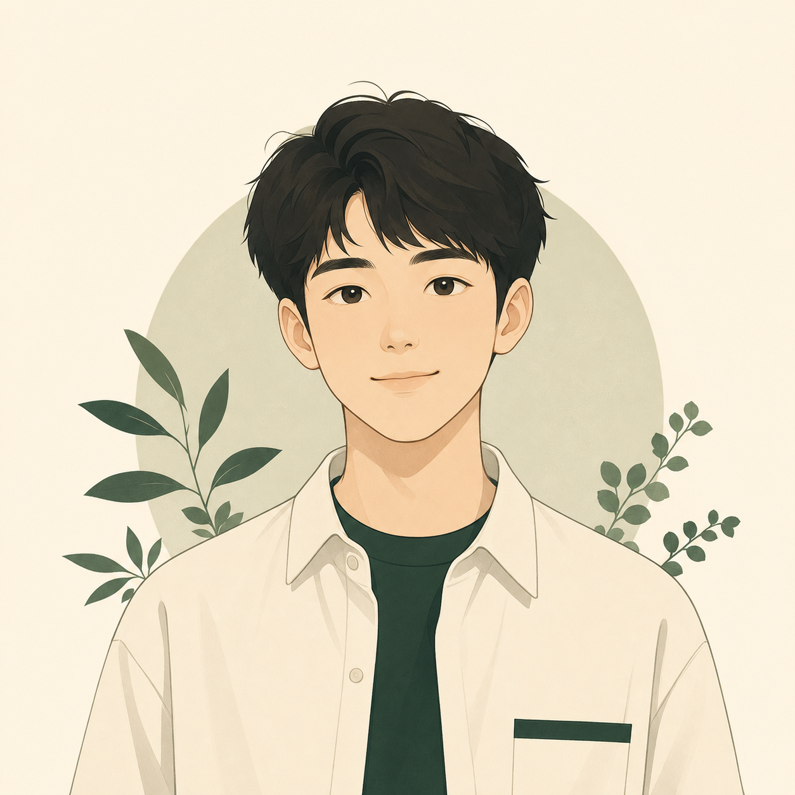

已经可以访问的主页版本。它把个人介绍、作品入口、联系方式和数字分身聊天放在一起，方便访客先快速了解我。

Nice to meet you
樱井白暮
一个正在学习 AI 的学生。
我最近在整理自己的作品，也在尝试用 AI 做一些更完整的小项目。 这里不是一份简历，更像一个让访客先简单了解我的入口。
Works
作品展示
我最近在尝试用 AI 做一些更完整的小项目。具体内容还在整理，能公开、讲清楚之后会继续补上。
我比较关注 AI 应用、内容表达和知识整理。这里会放长期整理出来的东西，没整理清楚的内容不会先包装成作品。
Contact
联系方式
如果你想聊聊 AI、健身、APEX，或者只是打个招呼，可以先从 QQ 联系我。
QQ 2579592162Digital Twin